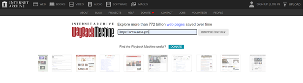

Разбор нестандартного задания с ресурса CTFlearn. Автор: Кочева Елизавета
Задание:
Путешественник во времени
Давайте отправимся на сайт nasa.gov 31 декабря 1996 года. Если вы скажете мне, какой адрес электронной почты НАСА указан на их веб-сайте, я дам вам 10 баллов. Формат: CTFlearn{email}
Итак, в самом задании нам даётся подсказка: нужно использовать машину времени, чтобы посмотреть на сайт 31 декабря 1996 года. Открываем поисковую строку и ищем «машина обратного пути»
Из описания обоих сайтов уже можно уловить интересное название «Wayback Machine». Что это такое? Снова обратимся к поисковику.
Теперь стало ясно: вот тот сервис, который поможет нам посмотреть, что же было на сайте nasa.gov 31 декабря 1996 года!
Для этого находим URL адрес сайта nasa.gov, копируем в буфер обмена.
Переходим на сайт Wayback Machine и вставляем туда полученный адрес.

Сайт нам предоставляет архив. Нам нужна дата 31 декабря 1996 года. Она как раз первая в архиве. Кликаем.
Вуаля! Стоит чуть изучить материал на сайте и сразу находим нужную почту-флаг.
Ответ: CTFlearn{today@nasa.gov}